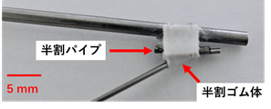

自己紹介
高等専門学校から現在に至るまで、主にロボットの制御やその応用に関する研究開発に取り組んでいます。
高専本科では、研究室のチームで廃炉創造ロボコンに参加しました。その中で私は、ROSを用いたセンサー制御システムの開発と、UnityによるUI設計を担当し、ROSとUnityの連携システムを構築しました。
続く高専専攻科では、二つの研究活動に注力しました。一つは、本科から継続して廃炉創造ロボコンへの挑戦です。専攻科では、これまでの経験を活かし、さらに高度なシステムの開発、より直感的なUIを設計し、ロボットの操縦性向上に尽力しました。
もう一つは、福島第一原発の廃炉作業円滑化を目指した放射線源マッピング技術の開発です。複数ロボット連携により放射線源を3次元環境地図へ反映するシステムをROS2基盤で構築し、SLAM、点群処理、経路計画等のアルゴリズムを統合。実機実験でその有効性を実証しました。
現在は、東北大学大学院に在籍し、耳科領域で使用される精密な手術器具部品の自動組立システムに関する研究に注力しています。ロボットアームやディスペンサーを精密に制御することで、微細部品の搬送から接着剤の塗布に至る一連の工程を自動化することを目指しており、精密作業における自動化技術と、医療という異分野の知見を深めています。
研究内容
廃炉措置高所除染遠隔操作ロボットの操作システム開発
(高専本科～専攻科)
本研究では、以下に示す高所除染遠隔操作ロボットを動作させる際に、周囲の状況やロボットの動作状態をオペレータが直感的に把握することを可能とする操作システム及びUIの開発を目的とする。

除染のシナリオ
除染シナリオは第8回廃炉創造ロボコンの競技課題を基に設定。オペレーターが直接見ることができない模擬フィールド内でロボットを遠隔操作し、高所壁面を除染することを目的とする。 実際の除染作業では表面を削るなどの方法が取られるが、本研究では壁に設置された模造紙をペンで塗りつぶすことで、作業の精度を評価する。
除染ロボットの仕様
操作システム
オペレーターは、PCとゲームパッド「DUALSHOCK4」を使用してロボットを操作する。 操作は「通常移動モード」、「除染作業モード」の2つに分け、限られたボタン数で複雑な操作を可能にした。 ロボットとオペレーターのPCは、有線LANを介してROS(Robot Operating System)をベースとしたシステムで通信する。 ロボット側にはデータ処理用のシングルCPUボード（Jetson Nano）と、モーター制御用のマイコンを搭載している。
ロボットの制御
ベース移動機構：
メカナムホイールの各車輪の回転速度を制御することで、前後左右や旋回など全方向への移動を実現する。
パンタグラフ機構：
ゲームパッドのアナログボタンの押し込み量に応じて昇降速度を制御する。
除染アーム機構：
手先の目標位置を入力すると、逆運動学計算により各関節の角度やアームの伸縮量が自動的に算出され、アームが目標位置へ移動する。
周囲状況の把握：
ロボットに搭載したカメラの映像をUnity上で展開し、オペレーターが直感的に周囲を見渡せるようにする。また、2D-LiDARのデータからHough変換を用いて壁面を検出し、壁との距離と正対角度を可視化する。
評価実験と結果
模擬フィールドでの評価実験では、作製した制御システムを用いてロボットを操作し、タスクを完遂することができた。
複数ロボット連携による放射線源の3次元環境地図への反映
(専攻科)
本研究では、福島第一原子力発電所の廃炉作業円滑化を目的とした、放射線源マッピングシステムを開発した。具体的には、高精度かつ環境色を付与された3次元環境地図の生成手法、複数ロボットの同時制御に向けたナビゲーション管制システム、ロボットによる複数地点での放射線計測データを統合し、汚染部位を特定・可視化するシステムを開発した。
開発したシステムの概要を以下に示す。親機は3次元環境地図を生成するとともに、搭載検出器により簡易的なヒートマップを生成し、汚染部位を大まかに特定できるようにする。
子機は自身の3D-LiDARスキャンデータと親機が生成した環境地図を参照照合することで自己位置を推定するとともに、指定された位置へ自律移動する。
そして、子機に搭載された検出器のデータを基に汚染部位を可視化し、その位置を特定する。
以上のシステムをROS2をベースに開発し、小型で不整地対応能力の高いヘキサポッドロボット(株式会社シマノ製、Loiter2020_ver1.1)を用いて検証する。

検証のため、研究室の実験環境にて反映実験を行った。
3次元環境地図の生成
3次元環境地図の生成には、3D-LiDARと慣性センサを用いて、移動ロボットの軌跡推定と3次元地図生成をリアルタイムで実現するフレームワークであるLIO-SAMを使用した。
生成3次元環境地図は座標データのみの点群で構成されており、そのままプロットしても視認性に乏しい。そのため、ロボットに標準搭載の深度カメラのRGB付き点群データをロボットの移動軌跡上に順次座標変換しプロットしていくことで環境色を付与した。
簡易的なヒートマップ生成
ロボットに搭載した放射線検出器からは、入射した放射線のカウント数データをリアルタイムで収集可能である。このデータを数秒ごとに区切り、カウント数の変化率に応じて色相を変化させ、ロボットの移動軌跡上に表示することで簡易ヒートマップを生成できるようにした。
この機能により、放射線源に近い場所で色相が変化し、汚染部位の大まかな特定に役立つことが確認できる。
ナビゲーション管制システム
ナビゲーション管制システムは、移動ロボットを目的地まで誘導するための経路計画、自己位置推定、障害発生時の回復動作など、ロボットの行動に関わる包括的なナビゲーション機能を提供するシステムツールであるNavigation2をベースに開発した。
子機の自己位置推定は汚染部位の特定において高い精度が求められる。しかし、Navigation2に標準搭載されている自己位置推定手法は、2次元点群を用いる確率的手法であるため、3次元環境における精度不足が懸念される。そこで、本システムでは、3次元空間にも適用可能なNDT(Normal Distribution Transform)アルゴリズムを用いて子機の自己位置を推定する方針を採用した。
以下にロボットの自律ナビゲーションによる移動実験の結果を示す。ロボットは適切な経路で目標地点までナビゲーションできたことを確認できる。
3次元環境地図上への線源位置反映
3次元環境地図上の線源と思われる部位にマーキングをするには、子機の自己位置とロボットから見た放射線源の方位情報を用いる。
実験には過去に計測された模擬計測データを使用する。放射線計測データは検出器より方位角、仰角10度ごとの線源の存在確率で得られる。これを仮想天球面上で考えセグメント化し、計測結果の方位角、仰角を基軸とした点群探索円錐を作成、円錐内に含まれる点群に色付けすることで、点群ベースの環境地図に計測データを反映できるようにした。
この線源位置の反映を複数地点で実行すると、重複してマーキングされる点群が発生する。本システムでは、この重複点群のみを最終的な反映結果として色付けすることで、より精度の高い放射線源の可視化を図る。
複数ロボットによる線源位置マッピングを検証するため、研究室の実験環境にて反映実験を行った。 以下に示すように、検出器の模擬計測データを基に放射線源を仮定し、その周囲にロボットを自律ナビゲーションすることで、模擬計測データ取得時の状況を再現する。 なお、本研究では一台のロボットで実験を行うが、便宜上、ロボットの配置場所によって一号機、二号機、三号機と区別する。
実験の結果、以下に示すように、放射線源の位置を3次元環境地図上に反映できたことを確認できた。
医療部品の自動組立システム開発
(大学院)
本研究では、開発された耳科領域用箸型手術器具の主要部品である「可動性接続部」の製作を自動化するシステムの開発を目的とする。

1．3Dプリンターによる接着治具の造形
2．ロボットアームによる部品の搬送・設置
3．ディスペンサーによる接着剤の注入
4．ロボットアームによる別部品の圧着
5．完成品の搬送
先行研究では、手術器具部品の自動組立システムの基盤が構築され、連続生産の可能性が示された。一方で、現状のロボットアームの繰り返し位置決め精度がミリレベルであるため、組立精度もこれに依存するという課題がある。今後は、より高精度なXYZ直交型ロボットを導入することで、マイクロメートルオーダーの精密組立を実現できるようにするほか、ロボットアームの最適な力制御アルゴリズムの導入や、誤差に対応可能な自動位置合わせアルゴリズムの導入も予定している。
業績
学術論文
- 横井健人, 河田竜太郎, 金子慎一郎, "複数ロボット連携による放射線源の3次元環境地図への反映", ロボティクス・メカトロニクス講演会2024講演論文集, 2024.
学会発表
- 横井健人, "複数ロボット連携による放射線源の3次元環境地図への反映", ロボティクス・メカトロニクス講演会2024, 2024.
受賞歴
- 第8回廃炉創造ロボコン, 特別賞・東芝エネルギーシステムズ, 2023.
- 計測自動制御学会, 優秀学生賞, 2025.